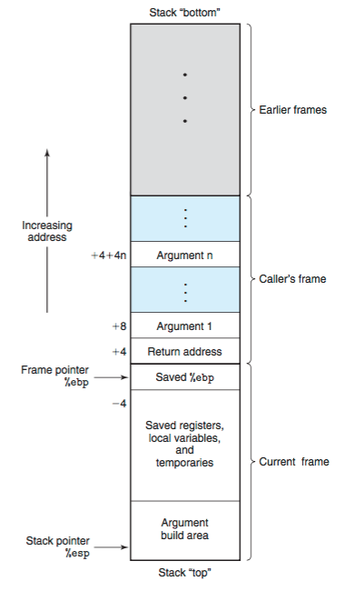

Understanding how function call works
Understanding assembly language is crucial for system programming. Some nasty defects of the system can only be solved by digging into the assembly level of the program. In this post, I'll revisit call stack concept as a way to understand how function call works under the cover of high-level language. In addition, this post belongs to part of future work mentioned in my post back in January.
Addressing mode
Before we jump into the actual material. I want to briefly revisit the various ways for assembly language accessing the data in memory (i.e., addressing mode). The following table is adapted from CSAPP (2nd edition):
| Type | Form | Operand Value | Name |
|---|---|---|---|
| Immediate | \($Imm\) | \(Imm\) | Immediate |
| Register | \(E_a\) | \(R[E_a]\) | Register addressing |
| Memory | \(Imm\) | \(M[Imm]\) | Direct addressing |
| Memory | \((E_a)\) | \(M[R[E_b]]\) | Indirect addressing |
| Memory | \(Imm(E_b, E_i, s)\) | \(M[Imm+R[E_b]+(R[E_i]\cdot s)]\) | Scaled indexed addressing 1 |
In the above table,
- \(Imm\) refers to a constant value, e.g. \(\mathtt{0x8048d8e}\) or \(\mathtt{48}\)
- \(E_x\) refers to a register, e.g. \(\mathtt{\%eax}\)
- \(R[E_x]\) refers to the value stored in register \(E_x\)
- \(M[x]\) refers to the value stored at memory address \(x\)
Main course
Now, let's bring our main course onto the table: understanding how function works. I'll first clear up some terms we will use during the explanation. Then, we'll take a look at the stack and understand how it supports function calls. Lastly, we'll examine two assembly programs and understand the whole picture of function calls.
Some terms
Let's first consider what the key elements we need in order to form a function:
-
function name
A function's name is a symbol that represents the address where the function's code starts.
-
function arguments
A function's arguments (aka. parameters) are the data items that are explicitly given to the function for processing. For example, in mathematics, there is a \(\sin\) function. If you were to ask a computer to find the \(\sin (2)\), \(\sin\) would be the function's name, and \(2\) would be the argument (or parameter).
-
local variables
Local variables are data storage that a function uses while processing that is thrown away when it returns. It's knid of like a scratch pad of paper. Functions get a new piece of paper every time they are activated, and they have to throw it away when they are finished processing.
-
return address
The return address is an "invisible" parameter in that it isn't directly used during the function. The return address is a parameter which tells the function where to resume executing after the function is completed. This is needed because functions can be called to do processing from many different parts of our program, and the function needs to be able to get back to wherever it was called from. In most programming languages, this parameter is passed automatically when the function is called. In assembly language, the
callinstruction handles passing the return address for you, andrethandles using that address to return back to where you called the function from. -
return value
The return value is the main method of transferring data back to the main program. Most programming languages only allow a sinlge return value for function.
Note
The way that the variables are stored and the parameters and return values are transferred by the computer varies from language to language. This variance is known as a language's calling convention, because it describes how functions expect to get and receive data when they are called. In this post, I'll follow C programming language calling convention.
Stack
Each computer program that runs uses a region of memory called the stack to enable functions to work properly. Machine uses the stack to pass function arguments, to store return information, to save registers for later restoration, and for local variables. The portion of the stack allocated for a single function call is called a stack frame. In other words, for each function call, new space (i.e., stack frame) is created on the stack.
The computer's stack lives at the very top addresses of memory. As the name suggests, stack is a stack data structure with the "top" of the stack growing from the high value addresses towards low values addresses. We use \(\mathtt{push \text{ } S}\) to push the source onto stack, and we use \(\mathtt{pop \text{ } D}\) to remove the top value from the stack and place it into a destination (i.e. a register or memory location). We use the stack register, \(\mathtt{\%esp}\) as a pointer to the top of the stack, which at the same time, is the top of topmost stack frame.
{kind=link}
Note
Pointer here means that the stack register contains an address in memory instead of a regular value.
Specifically, the stack register now contains the address, which has the top value of the stack
in it. With this description, we can see that to access the value on the top of the stack without
removing it, we can do (%esp), which is indirect addressing mode.
When we talk about function calls, what we really care about is the topmost stack frame because that's the memory region that is associated with our current function calls. CSAPP (2nd edition) has a nice picture about what the whole stack looks like:

If some texts (i.e. "Saved %ebp") or layout (i.e. the order of arguments) don't make sense to you, don't worry. I'll talk about them immediately.
Calling a function
Before executing a function, a program pushes all of the parameters for the function
onto the stack in the reverse order that they are documented. Then the program
issues a call instruction indicating which function it wishes to start.
The call instruction does two things:
- First it pushes the address of the next instruction, which is the return address, onto the stack.
- Then, it modifies the instruction pointer \(\mathtt{\%eip}\) to point to the start of the function.
Note
When you call a function, you should assume that everything currently in your registers will be wiped out. The only register that is guaranteed to be left with the value it started with is \(\mathtt{\%ebp}\) (why? see "Writing a function" section below). Thus, if there are registers you want to save before calling a function, you need to save them by pushing them on the stack before pushing the function's parameters.
So, at the time the function starts, the stack looks like this:
Argument N
...
Argument 2
Argument 1
Return address <--- (%esp)
As noted previously, the stack pointer holds the address, which contains return address as its value.
Writing a function
Writing a function in x86 assembly essentially contains of three parts: setup, using the stack frame to perform task, cleanup. The setup and cleanup steps are the same acrossed all the function calls. All three steps will be explained in details.
Setup
During the setup, the following two instructions are carried out immediately:
pushl %ebp
movl %esp %ebp
The first instruction is to save the current base pointer register (aka frame pointer), \(\mathtt{\%ebp}\). The base pointer is a special register used for accessing function parameters and local variables.The stack frame is delimited by two pointers: \(\mathtt{\%ebp}\) serves as the pointer pointing to the bottom of the stack frame and \(\mathtt{\%esp}\) serves as the pointer pointing to the top of the stack frame. As pointed out earlier, each function call has its own stack frame. Once the current function (i.e. callee) is done, we need to resume the execution of the caller function. This means that we need to restore the caller's base pointer register \(\mathtt{\%ebp}\) when we are done with callee function. Thus, we need to save the current base pointer register, which is the caller's for the future caller stack frame restoration.
Once we are done with saving the caller's \(\mathtt{\%ebp}\), we can now setup current stack frame's
\(\mathtt{\%ebp}\) by doing movl %esp %ebp. The reason for this is that we can now be
able to access the function parameters that are pushed earlier onto the stack by caller function
as fixed indexes from the base pointer. We cannot use stack pointer directly for accessing
parameters because the stack pointer can move while the function is executing.
At this point, the stack looks like this:
Argument N <--- N*4+4(%ebp)
...
Argument 2 <--- 16 (%ebp)
Argument 1 <--- 12(%ebp)
Return address <--- 4(%ebp)
Old %ebp <--- (%esp) and (%ebp)
Using the stack frame
Once we have performed the fix setup, we can now use the stack frame to:
- save registers
We need to push all the callee-save registers by convention onto the stack. By convention, registers \(\mathtt{\%eax}\), \(\mathtt{\%edx}\), \(\mathtt{\%ecx}\) are classified as caller-save registers, and \(\mathtt{\%ebx}\), \(\mathtt{\%esi}\), and \(\mathtt{\%edi}\) are classified as callee-save registers. The caller-save registers mean that the caller function is responsible saving these register values because the callee is free to override these register values. On the other hand, the callee-save registers mean that the callee function must save those registers values by pushing them onto the stack before overwritting them, and restore them before the returning because the caller may need these values for its future computations.
Note
Save registers step is not mandatory. If your caller function (or higher-level functions) don't use all these callee-save registers, you are free to skip this step.
- local variables
The function reserves space on the stack for any local variables it needs. Space for data with no specified initial value can be allocated on the stack by simply decrementing the stack pointer by an appropriate amount. Similarly, space can be deallocated by incrementing pointer. Suppose we are going to need two words of memory to run a function. We can simply move the stack pointer down two words to serve the space:
subl $8, %esp # Allocate 8 bytes of space on the stack
While it is possible to make space on the stack as needed in a function body, it is generally more efficient to allocate this space all at once at the beginning of the function. This way, we are free of worring about clobbering them with pushes that we may make for next function calls (i.e. push arguments and return address for the function calls contained inside the current function, which all happens in "Argument build area" in the above picture).
Suppose we save \(\mathtt{\%ebx}\) (i.e. callee-save register), and with our two words for local storage, our stack now looks like this:
Argument N <--- N*4+4(%ebp)
...
Argument 2 <--- 12 (%ebp)
Argument 1 <--- 8(%ebp)
Return address <--- 4(%ebp)
Old %ebp <--- (%esp) and (%ebp)
%ebx <--- -4(%ebp)
Local variable1 <--- -8(%ebp)
Local variable2 <--- -12(%ebp) and (%esp)
As you can see, we can now access all of the data we need for this function by using base pointer addressing using different offsets from \(\mathtt{\%ebp}\). \(\mathtt{\%ebp}\) was made specifically for this purpose, which is why it is called the base pointer.
Cleanup
When a function is done executing, it does the following three things:
- It stores its return value in \(\mathtt{\%eax}\)
- It frees the stack space it allocated by adding the same amount to the stack pointer
addl $8 %esp - It pops off the registers it saved earlier
popl %ebx - It resets the stack to what it was when it was called (it gets rid of the current stack frame and puts the stack frame of the caller back into effect)
- It returns control back to wherever it was called from. This is done using the
retinstruction, which pops whatever value is at the top of the stack, and sets the instruction pointer %\mathtt{\%eip}$ to that value.
The reason we have to restore the caller's base pointer register before calling ret is due to the
structure of our current stack frame: in our current stack frame, the return address is not
at the top of the stack. Therefore, before we return, we have to rest the stack pointer \(\mathtt{\%esp}\)
and frame pointer \(\mathtt{\%ebp}\) to what they were when the function began.
Thus, to return from the function you have to do the following:
movl %ebp, %esp # Set stack pointer back to the beginning of the frame
popl %ebp # Restore the caller's base pointer and now stack pointer pointing to Return address
ret # Since stack pointer pointing to return address, we can now call ret
Note
The step 2 and 3 are unecessary if we don't save any registers at all. The reason we do step 2 is that we need to move the stack pointer pointing to the saved registers. If there are no saved registers, the step 4 can achieve the same effect as step 3 because after you move the stack pointer back, future stack pushes will likely overwrite everything you put there.
Two examples
Now, we can take a look at two examples: the first one is to calculate the power given two numbers: one as the base and the other one as the power. The second example calculate the factorial of a given number, which demonstrates how the recursive function. is done.
# PURPOSE: Program to illustrate how functions work
# This program will compute the value of 2^3 + 5^2
#
# Everything in the main program is stored in registers,
# so the data section doesn't have anything.
.section .data
.section .text
.globl _start
_start:
pushl $3 # push second argument
pushl $2 # push first argument
call power # call the function
addl $8, %esp # move the stack pointer back
pushl %eax # save the first answer before calling the next function
pushl $2 # push second argument
pushl $5 # push first argument
call power # call the function
addl $8, %esp # move the stack pointer back
popl %ebx # The second answer is already in %eax. We saved the
# first answer onto the stack, so now we can just pop
# it out into %ebx
addl %eax, %ebx # add them together, the result is in %ebx
movl $1, %eax # exit (%ebx is returned)
int $0x80
# PURPOSE: This function is used to compute the value of a number raised to a power
#
# INPUT: First argument - the base number
# Second argumnet - the power to raise it to
#
# OUTPUT: Will give the result as a return value
#
# NOTES: The power must be 1 or greater
#
# VARIABLES:
# %ebx - holds the base number
# %ecx - holds the power
# -4(%ebp) - holds the current result
#
# %eax is used for temporary storage
.type power, @function
power:
pushl %ebp # save old base pointer
movl %esp, %ebp # make stack pointer the base pointer
subl $4, %esp # get room for our local storage
movl 8(%ebp), %ebx # put first argument in %eax
movl 12(%ebp), %ecx # put second argument in %ecx
movl %ebx, -4(%ebp) # store current result
power_loop_start:
cmpl $1, %ecx # if the power is 1, we are done
je end_power
movl -4(%ebp), %eax # move the current result into %eax
imull %ebx, %eax # multiply the current result by the base number
movl %eax, -4(%ebp) # store the current result
decl %ecx # decrease the power
jmp power_loop_start # run for the next power
end_power:
movl -4(%ebp), %eax # return value goes in %eax
movl %ebp, %esp # restore the stack pointer
pop %ebp # restore the base pointer
ret
The key to understand the function call is to trace through the status of stack frame. One thing to highlight as a side note is:
.type power,@function
This tells the linker that the symbol power should be treated as a function. Since this program is only in one file, it would work just the same with this left out. However, it is good practice.
Note
To run the program on 64-bit platform, we need to simulate 32-bit environment by assembling and linking our program like this:
as --32 power.s -o power.o;
ld -m elf_i386 -s power.o -o power
# PURPOSE: - Given a number, this program computes the factorial. For example,
# the factorial of 3 is 3 * 2 * 1, or 6. The factorial of
# 4 is 4 * 3 * 2 * 1, or 24, and so on.
#
# This program shows how to call a function recursively.
.section .data
# This program has no global data
.section .text
.global _start
.global factorial # this is unneeded unless we want to share
# this function among other programs
_start:
pushl $4 # The factorial takes one argument - the number we want
# a factorial of. So, it gets pushed.
call factorial # run the factorial function
addl $4, %esp # scrubs the parameter that was pushed on the stack
movl %eax, %ebx # factorial returns the answer in %eax, but we want it
# in %ebx to send it as our exit status
movl $1, %eax # call the kernel's exit function
int $0x80
# This is the actual function definition
.type factorial, @function
factorial:
pushl %ebp # standard function stuff - we have to restore %ebp
# to its prior state before returning, so we have to push it
movl %esp, %ebp # This is because we don't want to modify the stack pointer
# so we use %ebp
movl 8(%ebp), %eax # This moves the first argument to %eax
# 4(%ebp) holds the return address, and 8(%ebp) holds the first parameter
cmpl $1, %eax # if the number is 1, this is our base case, and we simply
# return (1 is already in %eax as the return value)
je end_factorial
decl %eax # otherwise, decrease the value
pushl %eax # push it for our call to factorial
call factorial # call factorial
movl 8(%ebp), %ebx # %eax has the return value, so we reload our parameter
# into %ebx
imull %ebx, %eax # multiply that by the result of the last call to factorial
# (in %eax) the answer is stored in %eax, which is good since
# that's where return values go.
end_factorial:
movl %ebp, %esp # standard function return stuff - we have to restore
popl %ebp # %ebp and %esp to where they were before the function started
ret # return to the function (this pops the return value, too)
One good practice we should note is that we should always clean up our stack parameter after a function
call returns. In this program, we do addl $4, %esp immediately after we call factorial in our _start.
Future works
- For this post, I assume we work with x86 32-bit processor. It's interesting to further investigate how the things changed for the 64-bit world.
Links to resources
Here are some of the resources I found helpful while preparing this article:
- Basic Assembler Debugging with GDB by Patrick Horgan
- Using gdb for Assembly Language Debugging
- x64 Cheat Sheet - Brown CS 33
- Programming from the Ground Up Chapter 3,4
- Computer Systems: A Programmer's Perspective (CSAPP) (2nd Edition) Section 3.7
-
For scaled indexed addressing, it actually includes both base pointer addressing mode (i.e.
movl 4(%eax), %ebx) and indexed addressing mode (i.e.,movl string_start(, %ecx, 1), %eax). ↩